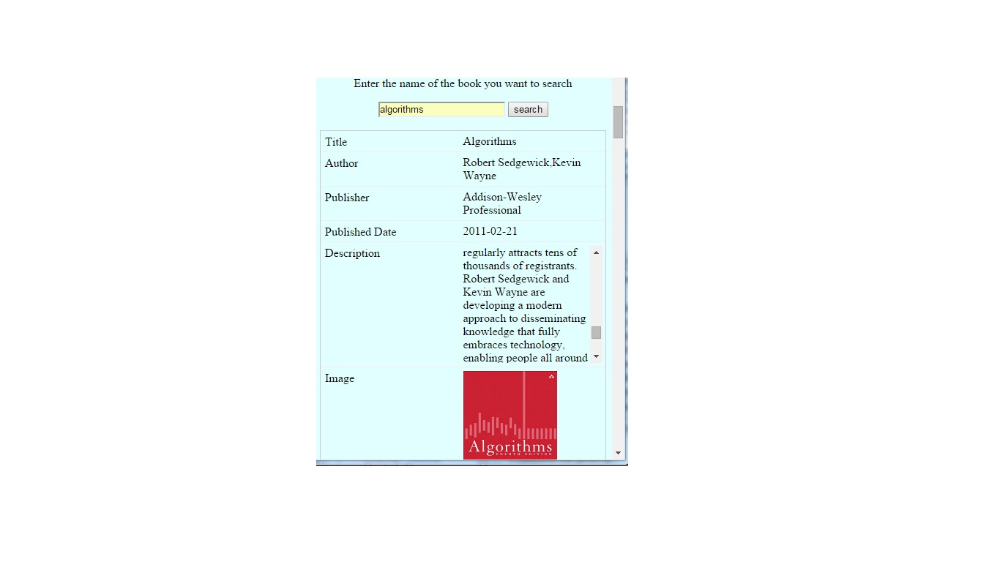

- All Project pages are responsive to incorporate user across all platforms and devices.
- The table structure is easily to maintain and can be easily switched from a horizontal to vertical layout with screen size change.
- Media responsive queries are used for switching layouts from one structure to another
Responsiveness of the Bestsellers page.

Responsiveness of the BookSearch page.

Responsiveness of the AuthorSearch page.
Source Code
CSS Code for Book Search
CSS Code for Author Search
CSS Code for BestSellers
CSS Code for Book Events
References
CSS Tricks